收录于合集
简
李兴
北京师范大学政治学与国际关系学院教授、博士生导师，国际事务系主任兼俄罗斯问题研究中心主任
内容提要
本文从纵横两方面论述了十月革命对国际关系的影响。从纵的方面看，十月革命是列宁领导的布尔什维克党，抓住和利用了战争与革命的机遇，采取了社会主义崛起方式。十月革命避免了俄国领土、经济、政治甚至文化的分裂，保住了一个完整的、有潜力的主要国际关系行为体，为以后的苏联的崛起奠定了基础、创造了条件。从横的方面论，十月革命在当时的国际格局和世界体系中起到了非常独特的巨大的作用。俄国脱离资本主义集团，在西方无产阶级和东方民族解放运动之间架起了桥梁，但为了自身的生存和发展，又不得不与主要资本主义世界打交道。苏俄表面处境孤立、困难，似乎离开了国际舞台的核心而走向了边缘，实际上，苏俄的存在和发展是对当时占主导地位的国际体系的挑战和否定。离开了苏俄的凡尔赛体系根基不牢、国际秩序长期不稳，欧洲格局在酝酿着重大变化。国际政治的重心出现了偏离传统西欧、向新兴苏俄和北美转移的迹象。列宁是国际关系理想主义学派思想的创始人之一，和平共处和国际主义是他对国际关系理论的创新。
关键词
十月革命 国际关系 国际关系行为体 国际格局和世界体系
本文的重点，不是讨论十月革命本身，也不是十月革命对国际共运包括对我国政治显而易见的影响，而是十月革命对国际关系和世界体系的影响。
当然，这里所讲的十月革命不是简单地具体指彼得格勒或莫斯科等地武装起义的几小时、几天甚至几个月，而是指与十月彼得格勒起义相关的复杂的、相互联系的一个过程，是与苏俄三年内战及苏联成立紧密相联的，是与列宁的名字紧密相联的。
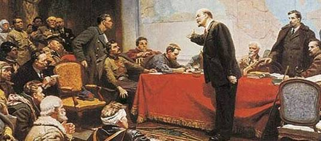
从国际关系行为体的视角看
所谓国际关系行为体，是指能够独立地参与国际事务并发挥影响和作用的一系列实体，主要是指能够在国际舞台上独立地承担权利和义务，按一定规则参与国际事务、被国际社会所认可的作为国际法主体的主权国家。十月革命，是沙俄在第一次世界大战中战败、国家面临分裂危险情势下爆发的。由于前线战败，俄国发生了二月革命。沙俄出现了政治、经济、民族全面的危机。芬 兰、波罗的海沿岸、格鲁吉亚、乌克兰及中亚等或宣布或事实上独立。由于十月革命的爆发，避免了俄国国家领土、经济、文化甚至政治的分裂，从某种意义上说是挽救了俄国。苏俄以及随后成立的苏联成为事实上的继承俄国的国际关系行为主体，为以后苏联东山再起打下了基础、创造了条件。现任俄罗斯联邦总统普京认为：“俄罗斯过去是，将来也还会是一个伟大的国家。它的地缘政治、经济和文化的不可分割的特征决定了这一点。
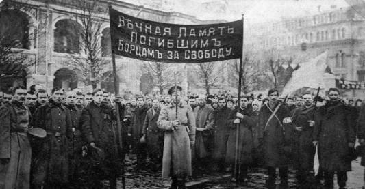
1917年3月8日，二月革命爆发，统治俄国300多年的罗曼诺夫王朝彻底覆灭
在俄罗斯整个历史进程中，它们还决定着俄罗斯人的思想倾向和国家政策。即使在今天它们依然 起着决定性的作用”[1]。而从相反的例子来看，在第一次世界大战中战败的奥匈帝国、奥斯曼土耳其帝国以及德意志帝国则被分割、肢解，从而导致国力大大削弱，奥地利和土耳其永久丧失争雄资格。由于随后苏联这个统一的多民族国家的出现，为地跨欧亚的多民族国家各民族的和平相处、相互融合、共同发展提供了现实可能性。
俄国是具有极大特殊性的国家，历史上多次大起大落，似乎周期性地易走极端。战争、革命、改革、民族主义通常紧密地联系在一起。开疆拓土，追求军事大国、强国地位，不屈从于西方，赶超西方是其历史发展的主旋律。与老牌帝国主义国家英法相比，俄国是欧洲历史舞台和世界历史舞台上的一位迟到的巨人。与资本主义新秀美国相比，俄罗斯的命运大起大落，远不是一帆风顺的。
图为阿芙乐尔号轻型巡洋舰。11月6日（俄历10月24日），阿芙乐尔号接受革命军事委员会的指示，占领尼古拉耶夫桥。7日晚9时45分，奉命开炮，发出进攻冬宫的信号。从此“阿芙乐尔号巡洋舰的炮声”成为十月革命的象征。
“盛”与“衰”、“分”与“合”的循环，“成”与“败”、“得”与“失”的更替，是俄国历史的常态。十月革命使俄国又一次处于历史的“关节点”上，充满了历史的选择性。正如克里米亚战败引起了资产阶级农奴制改革、1904～1905年对日战争失败导致国内革命和改革，从而推动了俄国向现代化社会迈进一样，十月革命，俄国知耻近乎勇，变民族主义为爱国主义，变战败为动力，转挫折为机遇，列宁领导的布尔什维克党人为俄国找到了一种新的崛起方式，新的崛起道路，俄国现代化的道路，即苏维埃的方式，社会主义的道路。美国学者布莱克说：“从试图实现变革这一点上，十月比任何一次革命都要激进”[2]。当时尚在监狱中的德国共产党领导人罗莎·卢森堡尽管不赞成布尔什维克党的很多做法，但还是称赞说，“布尔什维克表明他们能做到一个真正的革命政党在历史可能性的限度内所能做到的一切”[3]。与沙俄时期由于压制而万马齐喑的情况相比，由于十月革命激发了俄国人民的创造力，不是从上层贵族、上流社会，而是从普通劳动人民和社会下层中涌现出了无数创造性人才，既包括政治、军事、外交方面的，也包括经济、建设、文化、教育和科学方面的。十月革命，是俄摆脱失败、走出困境，由“衰”转“盛”，由“分”至“合”的转折点，是俄国独一无二的特性的再一次历史表现。
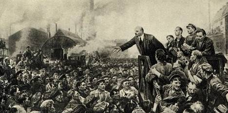
十月革命，苏俄意识形态的孤立是显然的，实际的地缘政治处境是严峻的。但从历史的长河来看，十月革命正处于俄英百年冷战(1815～1914年维也纳体系)和苏美50年冷战之间(1945～1991年凡尔赛体系)，这也从另一个侧面说明了十月革命使俄国在原来战败的基础上仍然保住了在国际关系中举足轻重的地位。
从国际格局和世界体系的视角看
“国际格局”是一个高度抽象的综合性术语。
“按照一般的理解，国际格局就是指在国际关系中起主导或者支配作用的国家或国家集团基于力量对比关系而形成的一种相对稳定的互动结构和状态。按照这一定义，国际格局具有两个方面的含义：它既是国际关系的内在结构，即由各个主要国家和国家集团之间所形成的力量对比总和的反映；同时又是各个主要国家和国家集团之间所形成的各种战略关系的组合规模和外在表现形式”[4]。
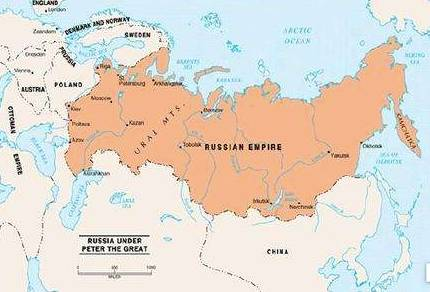
从近代国际格局的演变来看，一般认为，欧亚地区先后经历了威斯特伐利亚体系(1648～1814)、维也纳体系(1815～1914)、凡尔赛一华盛顿体系(1918～1939)、雅尔塔体系(1945～1991)等几个阶段。俄罗斯出现在欧洲和亚洲的时间比较晚，可以说在17世纪之前俄罗斯一直是被排除在欧洲主流的政治、经济、文化生活之外的，甚至没有受到西欧文艺复兴和宗教改革太大的影响。
但是，俄罗斯作为巨人在欧亚的崛起却并不比各老牌帝国晚多少。彼得大帝早在1689年通过外交手段、没有付出多大代价就与东方古老大国——中国划定了早期边界，把势力范围延伸到了中国清朝统治者祖地门前(从远东国际关系体系的角度来看，1689年中俄尼布楚条约似乎可以理解为亚洲版的威斯特伐利亚体系，两者在时间上相差仅40年)。经过彼得大帝和叶卡捷琳娜二世时期的努力，俄国打通了通往欧洲的出海口——波罗的海和黑海，与普鲁士、奥地利一起三次瓜分历史上曾攻下莫斯科的波兰。特别是亚历山大一世时期，俄国作为主力，打败了欧洲不可一世的拿破仑法国，俄军横穿欧洲，进入了西欧的巴黎，使俄国获得了欧洲陆权霸主地位。如果说，在威斯特伐利亚体系中还看不到多少俄国的身影，那么，在维也纳体系中俄罗斯成为举足轻重的角色。俄国是神圣同盟的核心和欧洲宪兵。作为最大的陆权霸主国，俄国与当时的世界海上霸主——大英帝国进行了长达百年的竞争。
十月革命没有改变第一次世界大战的结局。
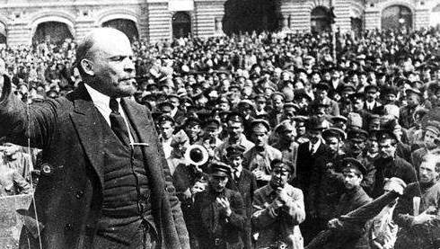
战争并没有因为苏俄颁布《和平法令》而停止下来，也没有因为作为协约国的主要国家之一的俄国退出对德战争而改变了同盟国集团战败的命运，因为美国于俄国二月革命后对德宣战，德国已成了强弩之末。
十月革命既无法阻挡、也无力改变凡尔赛一华盛顿体系，其力量表面弱小而实际影响巨大，埋下了动摇凡尔赛体系的“炸弹”。俄罗斯本是协约国核心成员，战胜国之一，但由于十月革命退出战争，它被协约国集团看成一个“叛徒”、“异己”，被战胜国排除在外，不但不能参加“瓜分”胜利果实，而且还遭到了孤立和敌视。凡尔赛体系中的一个核心内容就是创立“维护和平与安全”的国际组织——国际联盟。由实力已经下降为二流的英法在国联中唱主角；实力上升的美国和潜力犹存的苏俄或主动或被动地游离在外，没有参与进来。
国联这个国际组织未能正确地反映各大国之间的力量对比，因而犹如一座高楼建立在沙漠之上，根基不稳，岌岌可危，随时有倒塌的危险。这也就是为什么一战后凡尔赛体系生命力不强、不到20年即土崩瓦解的原因。 ，由于十月革命，在帝国主义集团中，不仅大致出现了战胜国与战败者(德奥集团)之分，在战胜国(即协约国集团)当中，又出现了美与英法的离心、社会主义苏俄与帝国主义英法美的分立。十月革命瓦解了对抗同盟国的战时同盟，与殖民地半殖民地的民族革命运动互相呼应。
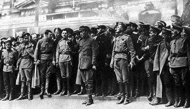
苏俄之初，国力并不强，国际地位也不高，在国际格局中处于不利地位，在以欧洲为中心的国际体系中处境困难。苏俄遭到了以前盟友的孤立，被排挤出主流的国际体系之外。一方面，协约国集团对待它可以说并不十分在意，并没有真正认真地组织武力消灭。但这只是表面的，情况在发生变化。事实上苏俄保住了辽阔的疆土，特立独行，独树一帜，引人注目。另一方面，苏俄的巨大的政治影响使协约国集团感到威胁和不安。英国陆军大臣丘吉尔叫嚷要搞“十四国武装干涉”就是明显的反映。特别是苏俄脱身于帝国主义矛盾和争端，超脱于凡尔赛体系之外，得以集中力量搞国内建设。十月革命后国际政治重心开始偏离传统的西欧，出现了向苏俄和北美转移的迹象。
所谓世界体系，指的是在国际范围内各主权国家行为体之间的相互政治经济联系与作用所形成的既矛盾又统一的有机整体。它既包括世界经济体系，又包括世界政治体系。世界体系具有整体性、相互联系性和不平等性等基本特征。世界体系的涵盖面大于国际格局。战争加上十月革命使旧的世界体系——维也纳体系被推翻，新的世界体系——凡尔赛体系逐步建立起来。作为凡尔赛体系核心内容的国际联盟兼有防止战争和遏制布尔什维克革命的双重目标，这就使得新的国际体系的形成、演进及其特征无法摆脱地同十月革命联系在一起。以欧洲为中心的国际秩序也变得复杂起来。英法似乎仍然掌握着世界的领导权，但实际上实力下降，力不从心。美国实力已经上来了，但并没有也不愿意接过世界主导权。德国已经被打倒在地了，但德国问题仍然处于欧洲均势的中心。在俄国问题上，只有在如何对付苏俄这一点上英法美才能够放下争吵，取得共识和一致。苏俄仍面临着许多不稳定和不可测因素，似乎暂时退出了博弈。而事实上，俄国历来对欧洲平衡而言是不可或缺的。维也纳体系能维持近百年，雅尔塔体系之所以能维持半个世纪最后以和平方式结束，均与俄国(苏联)在其中的支柱作用有关。美国总统西奥多·罗斯福就曾指出：“世上没有其他国家比俄罗斯更掌握着未来的命运”[5]。
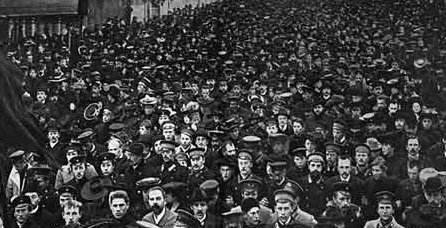
精通理论的外交大师基辛格博士也认为，“俄罗斯 对世界秩序永远都很重要”[6]。俄既是欧洲平衡的天然的维护者，也是有能力的破坏者。没有俄国支持和维护的欧洲平衡是脆弱的。“革命对国际体系的这种影响在20世纪表现得更为明显……其中最重要的就是1917年的俄国革命”[7]。十月革命使当时的欧洲平衡长时间难以恢复，国际秩序十分复杂。苏俄的存在和发展，实际上是对当时占主导地位的凡尔赛体系的挑战甚至否定。作为前盟友的协约国甚至比前敌手的战败国德国更敌视苏俄。苏俄有强烈的孤独感、不安全感及对西方世界根深蒂固的怀疑和不信任。
同时，对凡尔赛体系的仇恨，对共产主义的恐惧使 德国的某些集团乘机把希特勒推上了台[8]，从而加速了凡尔赛体系的崩溃。
俄国脱离资本主义集团，在西方无产阶级和东方民族解放运动之间架起了桥梁，但又不得不与主要资本主义国家打交道。它孤立而特立独行，弱小而地域辽阔。苏与协约国从战时盟友到战后敌手，与德国正好相反，与中国有恩有怨，对中国影响增大。苏俄表面上在欧洲国际体系中的地位下降，但在全球范围内的国际影响上升。苏俄表面处境困难，居于俄国历史上起核心作用的两个国际体系——维也纳体系和雅尔塔体系之间，似乎暂时离开了国际舞台的中心位置而走向了边缘地带，实际上，苏俄处在联系东西、贯通俄国历史前后的关键地位和枢纽位置。离开了苏俄的凡尔赛体系根基不稳。十月革命对旧的国际体系提出了挑战。欧洲格局在酝酿着重大变化。国际政治的重心出现了转移的趋势。
从国际关系理论的视角看
人们在谈到现代西方的国际关系理论时，总是津津乐道于现实主义和理想主义两大流派。而理想主义流派的代表人物当推美国第一次世界大战时期的总统伍德罗·威尔逊。其原因就在于他于1918年1月8日在国会参众两院联席会议上，发表了“建立世界和平的纲领”的演说，史称“十四点”。其主要内容有：(1)主张公开缔结和平条约，反对“秘密的国际谅解”。(2)主张无论平时还是战时，“必须保持公海航行的绝对自由化”。(3)主张“消除一切经济壁垒，建立平等的贸易条件”。(4)主张对殖民地问题要“作出自由的、坦率的和绝对公正的调整”。(5)主张在解决有关俄国的问题时，其他国家须保证“最自由的合作”，使俄国“进入自由国家的社会”。(6)主张“必须成立一个具有特定盟约的普遍性的国际联盟”。其中，美国认为，建立国际联盟是其战后“全部外交结构的基础”，“是头等要素的问题”[9]。威尔逊的“十四点计划”打着“理想主义”的旗号，他被认为是理想主义国际关系流派的代表人物。
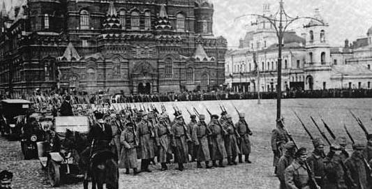
而早在十月革命的第二天，即1917年11月8日，全俄苏维埃代表大会通过并宣布了列宁亲自起草的对外政策的第一个文件——《和平法令》。《和平法令》严厉谴责了帝国主义战争，揭露帝国主义战争的目的，宣布废除资产阶级秘密外交，向第一次世界大战交战各国政府和人民呼吁立即进行公正、民主的和谈；缔结和约，实现不割地、不赔款的和平。根据《和平法令》所做的承诺，苏俄政府先后公布了一百多项对外秘密条约。
1917年月11月15日，苏俄人民委员会通过了《俄国各族人民权利宣言》，宣布废除旧俄国政府不乎等的民族政策，宣布俄国各族人民的平等和主权，废除民族特权和民族限制，各民族享有民族自决权等。12月3日，人民委员会公布了《告俄国和东方全体伊斯兰教劳动人民书》，宣布了苏俄政府对东方伊斯兰教民族和国家的新政策，声明废除个俄政府签订的瓜分伊朗和土耳其秘密条约，确立平等、友好互助的相互关系。
其实，列宁的《和平法令》和威尔逊的“十四点计划”有很多相近之处，比如，缔结和平条约，反对秘密外交，公正地对待殖民地，包括其独立，等等。
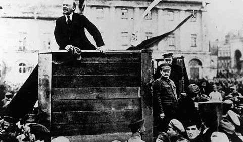
《和平法令》不仅在时间上略早于“十四点计划”，而且表示要“废除”和“归还”沙俄已经取得的特权和利益，其内容更实实在在，具有现实可行性，对殖民地半殖民地国家具有吸引力。威尔逊的“十四点计划”雷声大，但未能得到美国国会批准。而列宁的《和平法令》及以后发展演变而来的和平共处思想不是一时热情冲动的产物，而是酝酿已久的思想。它不仅代表了新掌权的无产阶级的思想，而且反映了当时世界上进步的、正义的思潮。
无产阶级国际主义是列宁国际关系思想的创见。沙俄时期的外交思想中最有影响的莫过于“泛斯拉夫主义”和“东正教大家庭”，充分体现了 沙俄外交的狭隘和自私。列宁较早地提出和使用了“无产阶级国际主义”这一概念。在十月革命胜利之初，苏维埃政权与国内外敌人进行生死大搏斗，迫切希望得到国际无产阶级的支持和援助。
而苏俄境内各族人民团结战斗，共同对敌，族际之间的矛盾尚未突显出来。因此，列宁当时所讲国际主义主要是指主权的民族国家之间的关系，如苏俄与波兰、德国、匈牙利之间的关系。但是随着反对国内外敌人的战争结束和工作重心的转移，随着统一的苏联国家的建立和大俄罗斯主义的抬头，列宁敏锐地看到了苏联国家内部潜在的民族 矛盾的危险性。其国际主义思想发生了变化，其范畴由民族国家之间延伸到苏联国家内部，把苏联内部各民族的平等和联合(如俄罗斯与乌克兰、格鲁吉亚的关系等)也上升到了国际主义的高度，纳入到了国际主义的范畴，再三强调要反对大俄罗斯沙文主义。
美国参议院拒绝批准《凡尔赛条约》，并拒绝参加国际联盟。威尔逊焦虑成疾，于1919年病逝。但威尔逊的理想主义精神却在美国发扬光大，成为以后美国外交政策的基础之一。列宁的思想取得了部分成功，如苏俄政府废除了沙俄时期上百个秘密条约，但在“归还”别国的权利和利 益方面，比如苏俄三次《对华宣言》的精神没有得到落实。但列宁思想的影响仍然是非常大的。
列宁的思想使其有资格成为现代国际关系理论理想主义学派的创始人，因为《和平法令》的理想主义精神不亚于“十四点计划”，和平共处思想的创见也不逊于创立国际联盟。而且，列宁的国际主义思想不仅是现实主义的斗争武器，而且超越了狭隘的民族利益、国家利益和阶级、集团利益，本身也具有某种理想主义的色彩。过去西方学术界出于政治的原因，长期把列宁排除在理想主义国际关系思想大师之外，这是不公平的。
从国际关系实践的视角看
(一)
十月革命后，苏俄很快颁布《和平法令》，宣布退出帝国主义战争即第一次世界大战，其后果主要表现在两个方面：其一是，德奥同盟国集团乘机发动进攻威胁，在谈判中抬高要价，提出令苏俄屈辱的和谈条件。
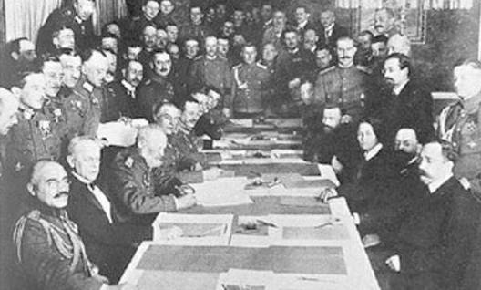
1918年3月3日，苏俄被迫在布列斯特-立托夫斯克和约上签字，使俄国丧失了将近一百万平方公里的土地和近五千万居民
其典型事例是布列斯特和约。1918年3月，布尔什维克党内和苏维埃政府内进行了激烈的争论后，终于做出重大让步，与德国签订了屈辱的《布列斯特条约》，苏俄丧失了近百万平方公里的国土。1918年11月13日，在德国战败投降后，苏俄立即宣布废除这一条约。
其二是，协约国集团担心失去东线战场对敌人的两线夹击，战局朝不利于自己的方向发展，甚至担心德俄“勾结”，因此，协约国集团在战时谴责苏俄“背信弃义”，在德国宣布投降、苏俄宣布废除布列斯特条约后，协约国和美国曾经考虑过对苏俄的三种策略：谈判，武装干涉或者封锁。最终，选择了武装干涉[10]。除了利用俄国白卫军外，还借口防止德军夺取协约国在俄国港口修建的武器弹药库，不惜亲自出兵动武。协约国集团从俄国盟友演变为苏俄敌手。苏俄坚决反击协约国集团的武装干涉，组织新生的工农红军，捍卫新生的苏维埃政权。
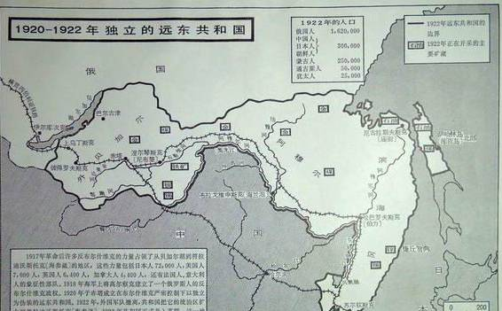
同时，为了避免与日本军队直接发生冲突，1920年4月苏俄还在贝加尔湖以东地区建立了一个远东共和国，作为一个缓冲地带。1922年10月，日本被迫全部撤走干涉军。11月，远东共和国并人俄罗斯苏维埃共和国。
(二)
列宁对世界革命特别是欧洲革命寄予了很大的希望。但是由于本身力量有限，忙于与国内外敌人苦战，苏俄对十月革命直接影响下发生的、欧洲国家如德国、匈牙利和保加利亚等国的革命只有道义上的支持，实际的援助很少。这些革命陆续失败了。1920年发生了苏俄与波兰战争，苏俄本想推进欧洲革命，但红军在华沙城下失利，使列宁的思想发生了很大的转变，即无产阶级世界革命的时机还不成熟，在社会主义和资本主义 谁也吃不掉谁的情况下，必须学会两种制度和平共处。列宁概括新形势说，“经过三年残酷而激烈的战争”，“无论俄罗斯苏维埃共和国还是整个资本主义世界都没有获得胜利，也没有遭到失败”，“长期僵持，双方最后不分胜负的局面终于形成了”[11]。
(三)
1919年3月共产国际(即第三国际)成立，把苏俄的革命运动与全世界无产阶级的革命运动及殖民地半殖民地人民的民族解放运动联接起来，扩大革命影响，与帝国主义、资本主义世界相对抗，开创了与传统资本主义外交方式不同的、革命的政党外交方式，对国际关系产生了重大的影响。
(四)
苏俄在十月革命次日即公布《和平法令》，反对帝国主义对弱小民族实行侵略和兼并，要求帝国主义从弱小民族“撤军”。1917年12月3日，苏维埃政府发表《告俄国和东方全体伊斯兰教劳动人民书》。12月31日，苏俄承认了芬兰的独立。1918年月1月11日，苏俄人民委员会通过法令，承认“土耳其属亚美尼亚人”有自由自决直至完全独立的权利。1918年8月29日，苏俄宣布废除俄普奥三国关于瓜分波兰的条约，承认波兰的民族独立。1918年12月7日，苏俄宣布承认爱沙尼亚独立。12月22日，苏俄又宣布承认立陶宛和拉脱维亚独立。1919年8月，苏俄政府宣布承认蒙古是一个自由的国家，任何外国人不得干涉其内政。1921年2月至3月，苏俄先后同波斯、阿富汗和土耳其分别签订了友好条约。
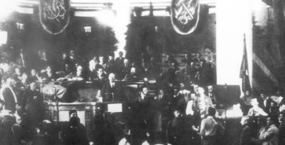
第三国际
由于布尔什维克党的统一领导，由于共同的对敌斗争，又由于历史的经济和社会联系，十月革命后苏俄各民族独立共和国之间的联系不但没有削弱，反而得到了加强。成立共同的苏维埃社会主义共和国联盟，成为人心所向、大势所趋。1922年12月30日，苏联成立。最初参加苏联的有俄罗斯联邦、乌克兰、南高加索联邦和白俄罗斯等加盟共和国。
十月外交显然具有革命性和先进性，苏俄外交实践文武相济，体现了原则性与灵活性相结合，说明列宁是一个革命的现实主义者。
十月革命对国际关系的影响
十月革命对国际关系的影响首先是思想上的，《和平法令》提出了与资产阶级外交相对立的国际关系新准则。《和平法令》对各国人民产生了巨大的积极的影响，但帝国主义对此却非常恐惧。
美国国务卿兰辛就把《和平法令》称作“对各国现存社会制度的直接威胁”[12]，他们把苏俄的和平外交政策视为洪水猛兽。
帝国主义者之所以害怕十月革命，一是因为十月革命提供了一条与资本主义、帝国主义完全 不同的社会制度、发展道路和模式。这个制度是资本主义的对立面——社会主义，而发展的道路是“激进的”、“革命的”，而不是所谓温文尔雅的、“渐进的”，从而引起了极重视意识形态的西方特别是美国本能的、刻骨的敌对和仇视。从而不仅使苏联，而且使那些在十月革命影响下，走十月革命道路夺取政权的东欧和亚洲社会主义国家长期遭到以美国为首的西方世界的围堵和“演变”。因为“所有这些国家的创立都是1917年革命及其对世界事务影响的结果”[13]。
帝国主义者之所以极不喜欢十月革命，还在于十月革命揭穿了帝国主义“国际政治的秘密”不 仅是“争霸和侵略战争”，而且是资本主义国家为满足资本家和本民族、国家的私利甚至世界霸权而不计国际道德、不择手段地采取联盟、欺骗和侵略战争等谋取领土、殖民地和世界市场[14]。
美国历史学家阿瑟·施莱辛格说过：“对外政策是一个国家向世界展示的面孔。所有国家的目标都是一致的，即保护国家的完整和利益。但是一个国家设计和执行本国外交政策的方式，受到国家特性的巨大影响”[15]。十月革命，使占地球1／6的土地上出现了世界上第一个社会主义国家，在国际关系中增添了新的因素和成份，并开始打 破几百年来资本主义势力一统天下的局面，从社会制度和意识形态上把一个地球分成两个世界，从力量对比方面把国际格局、国际体系分成不对称的两个部分。十月革命，废除秘密外交、归还弱国权利，是对帝国主义“弱肉强食”、“以强凌弱”、“适者生存”的丛林式的生存法则的否定，把过去的“神秘外交”、“上层外交”变成“公开外交”和“人民外交”，是人类思想和行为规则的进步，是近代以来国际关系的新气象。正如列宁所说，社会主义“对世界政治能起决定影响”[16]。
具体来说，十月革命对苏俄与欧美、东方的关 系都带来了直接的影响。
(一)
十月革命对苏美关系的影响。即使不算是盟友，十月革命以前俄美关系上一向还是比较友好的。在美国南北战争期间，俄国可以说是唯一支持美国北方资产阶级政权的大国。在此之前，俄美之间从来没有发生过战争(无论热战还是冷战)。在第一次世界大战中俄美本来是盟国，由于十月革命，美对苏俄态度急剧恶化，甚至敌对。
共产主义被看成是最大的“非美因素”，被认为是美国实现“天定命运”的最大障碍，同时美国又有反对激进革命的传统。美国国务卿兰辛说：“归根到底，布尔什维主义对于美国安全的威胁比德国 更大，因为它既否定民族性又否定财产权，并以革命威胁美国”[17]。美国出兵俄国北部和西伯利亚，武装干涉苏维埃俄国。在20世纪20年代相当长一段时间，美国官方多次拒绝苏俄关于两国开展平等贸易的呼吁，甚至提出先决条件，要求苏俄保障私人财产所有权，并对目前的社会制度作根本改变。美国顽固不化地迟迟不肯承认苏联，直到1933年美国自身陷入史无前例的经济大危机时才不得不承认。而这比老牌资本主义国家英国和法国对苏联的承认晚了9年(1924年)。
(二)
十月革命对苏俄与英法关系的影响。这三个国家本是协约国集团的最核心成员。由于十月革命反目成仇。英法反对俄国单独与德停战、和谈。它们主导的巴黎和会不仅把苏俄排除在外，而且成为策划反苏的大本营。英法积极地对苏实行武装干涉，以失败而告终。不过，英国是现实的，做生意的老手，特别重视现实的经济利益。
1921年3月在伦敦签订了苏英贸易协定，意味着英对苏俄事实上的承认。而法国坚持要苏俄偿还一切债务，反对同苏俄恢复贸易关系。1924年，英国同苏联建立外交关系。这是第一个同苏联建立外交关系的资本主义大国。同年不久，法国也同苏联建交。
(三)
十月革命对苏德关系的影响。从理论上 讲，十月革命，退出战争对德国最为有利。这也就是为什么列宁被怀疑拿德国人的资金、被临时政府指控为“叛国”的原因。十月革命，使俄德从交战双方变成和谈对象，最后不顾协约国的反对，达成了对苏俄极为不利的《布列斯特和约》。德国很快战败投降，苏俄宣布废除和约。作为战败国，德国受到战胜国集团的欺凌和压制；作为新生的社会主义国家，苏俄受到了协约国集团的排挤和制裁。两国国际处境孤立、困难，共同的命运使苏德两国走向了和解。”22年在热那亚会议上两国达成了和解的拉巴洛条约。但是，这只是策略。
德国资产阶级对社会主义苏俄的恐惧和仇恨是根深蒂固的。
(四)
十月革命对中苏关系的影响。苏维埃政权建立后不久，苏俄即建议与中国谈判关于取消不平等条约，放弃在华特权，并在新的基础上建立两国关系，但北洋政府未能积极响应。1919年7月和1920年9月，苏俄政府先后发表了两次对华宣言，宣布放弃“沙皇政府从中国攫取的满洲和其他地区”，废弃一切特权；“拒绝接受因1900年义和团起义所付的赔款”；把沙皇政府从中国人民那里掠夺的一切交还中国人民。宣言还建议两国立即建立正式外交关系。第二次《对华宣言》还明确宣布“以前俄国政府历次同中国订立的一切条约 全部无效，放弃以前夺取中国的一切领土和中国境内的俄国租界”，俄国公民在中国居住不得享有治外法权，迅速建立正常的贸易和经济关系，等等。在此基础上于1924年签订的《中苏协定》是中国近代以来外交史上第一个平等友好的条约。
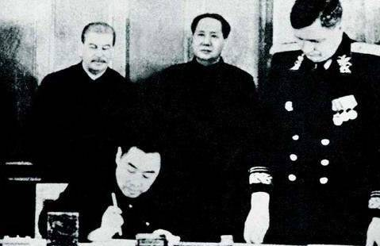
1950年2月14日，《中苏友好互助同盟条约》在莫斯科克里姆林宫签订
两次对华宣言和《中苏协定》得到了中国人民和孙中山领导的中国国民党的欢迎。毛泽东同志有一个著名论断：十月革命一声炮响，给中国送来了马间架起了桥梁，但为了自身的生存和发展，又不得不与主要资本主义世界打交道。它孤立但特立独行，国力弱小而地域辽阔、潜力巨大。苏俄在当时欧洲的国际体系中的地位下降了，但在全球的国际影响却上升了。苏俄表面处境困难，从时间上居于俄国起核心作用的两个国际体系——维也纳体系和雅尔塔体系之间，似乎暂时离开了国际舞台的核心而走向了边缘，实际上，苏俄处在联系东西两方、在俄国历史上承先启后的枢纽位置，其存在和发展是对当时占主导地位的凡尔赛国际体系的挑战和否定。离开了苏俄的凡尔赛体系根基不稳。国际政治的重心出现了偏离传统西欧、而向苏俄和北美转移的迹象。列宁当之无愧的是国际关系理想主义学派思想的创始人之一。和平共处和国际主义思想是他对国际关系理论的创新。新旧国际体系的交替、演进无法摆脱地同十月革命联系在一起。
人们创造历史，但绝对不是随心所欲地创造，而是在直接承继下来的、既定的条件下创造。历史是由人创造的，每一代人都要发挥自己的主观能动性。历史是由多个环节构成的，每一个环节都有自己的历史使命。只有这样，历史才能有所进步。历史的过程有继承，但更应有创新和发展。
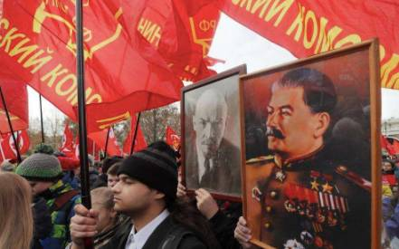
十月革命的纪念活动
历史是既成事实，不可能一笔勾销，也不可能推倒重来。历史不可能按照事先人为的假设来创造和改写。夸大或苛求前人都不是历史的、科学的态度。不同的人，在不同的时期从不同角度、不同的侧面对重大历史事件得出不同的观点和看法，是正常的，也应当是允许的。问题的关键是，对历史问题的分析要有历史的、客观的、实事求是的科学态度。
注释：
[1] (俄)弗拉基米尔·普京：《千年之交的俄罗斯》，载《普京文集》，中国社会科学出版社2002年版，第9页。
[2] [美)西里尔·布莱克等：《日本与俄国的现代化——一项进行比较的研究报告》，商务印书馆1992年版，第173页。
[3] [德)罗莎·卢森堡：《论俄国革命》，《卢森堡文集》下卷，人民出版社1990年版，第506页。
[4] 李义虎：《国际格局论》，北京出版社2004年版，第35页。
[5] (美)亨利，基辛格：《大外交》，海南出版社1997年版，第24页。
[6] 前引书：《大外交》，海南出版社1997年，第9页。
[7] (英)弗·哈利迪：《革命与世界政治》，世界知识出版社2006年中文版，第187页。
[8] 刘淑春、翟民刚、王丽华编：《“十月”的选
90年代国外学者论十月革命》，中央编译出版社1997年版，第160页；前引书：《革命与世界政治》，第188页。
[9] 《世界通史资料选辑》，现代部分，第一分册，商务印书馆1980年版，第11页。
[10] 让·巴·迪罗塞尔：《外交史1917—1978》，上海译文出版社1982年版，第88页
[13] 《列宁全集》中文第二版，第40卷，第22~23页。
[14] 《美国外交关系文件集(1914～1920年，兰辛文件)》第二 卷，华盛顿1960年版，第344页。
[15] [英)弗·哈利迪：《革命与世界政治》，世界知识出版社2006年版，第103页。
[14] 梁守德、洪银娴：《国际政治学理论》，北京大学出版社
2000年版，第12页。郭树勇：《从国际主义到新国际主义——马克思主义国际关系思想发展研究》，时事出版社2006年版，第91页。
[15] ArthurM． Schiesinger，jr.，the CycleJ of AmericanHistory，BostOn：HOughton
Mifflin，1986，p．52
[16] 列宁：《民族和殖民地问题提纲初稿》，《列宁全集》第31卷，人民出版社1958年版，第128页。
[17] N．GOrdOn levin，J．R．， Woodrow Wilsor2 O，2d WorldPolitic，Oxford University
Press，1968，P．72．
文章来源： 《俄罗斯中亚东欧研究》
** 2007年第5期、** 中国社会科学网
筛选：早安老师 编辑：里仝